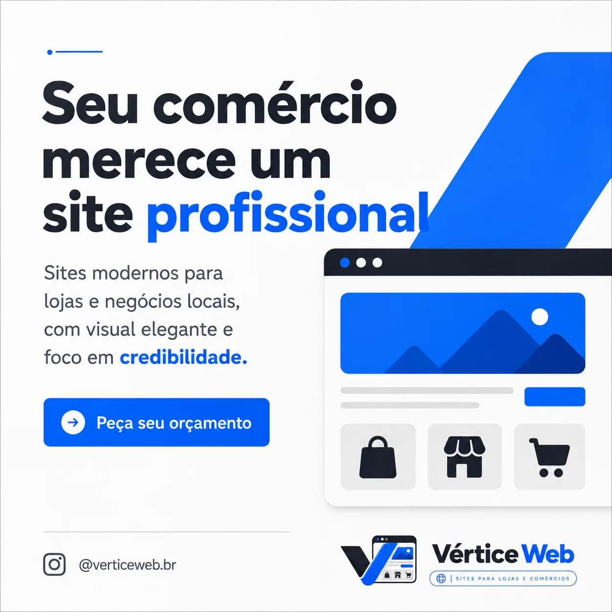
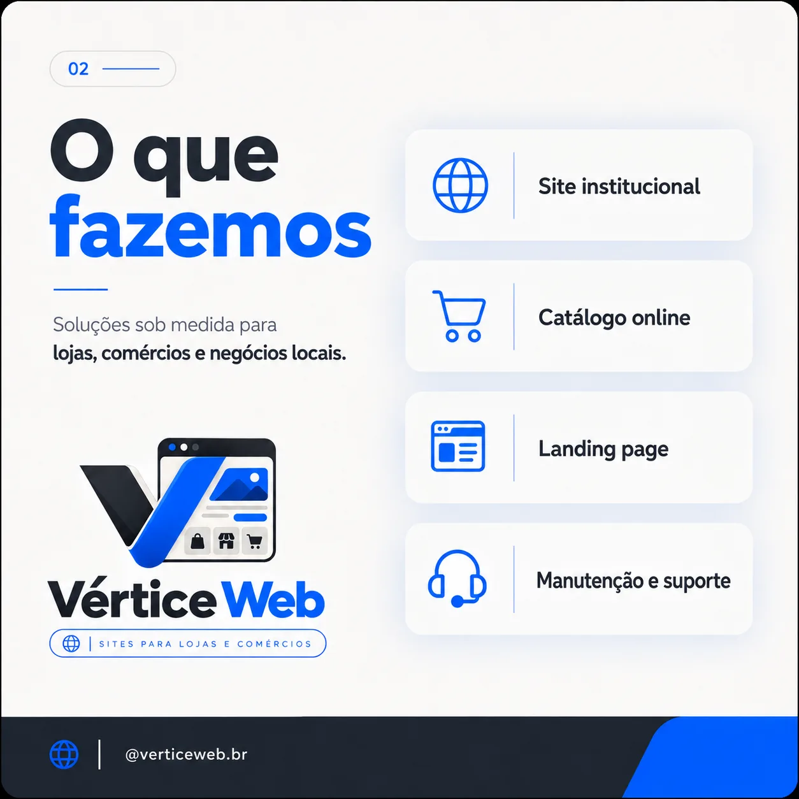
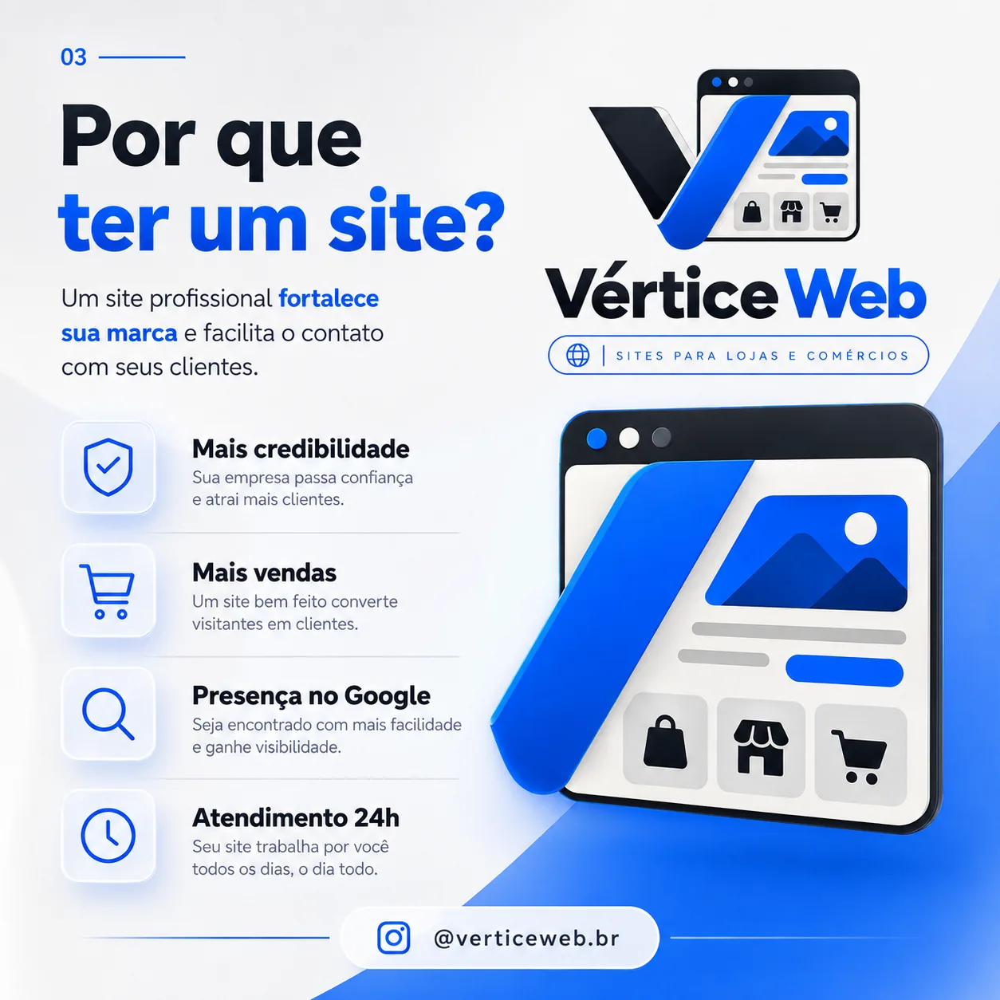
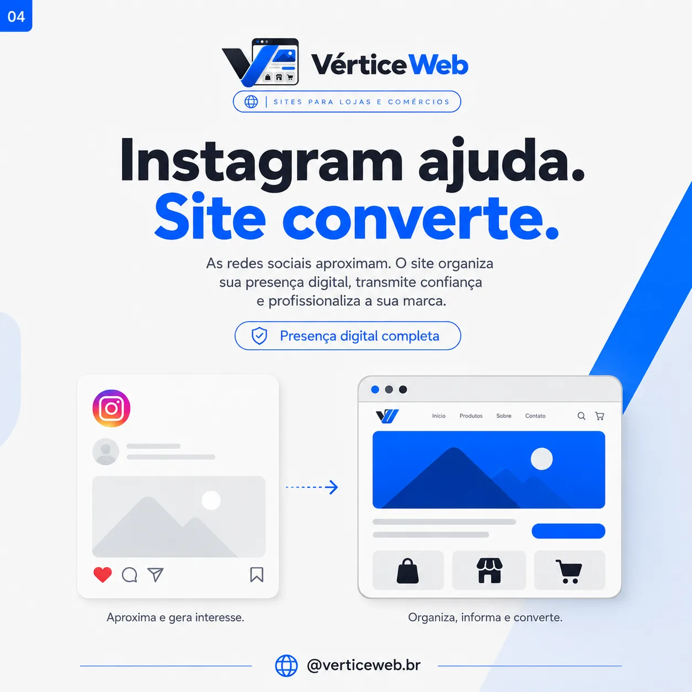
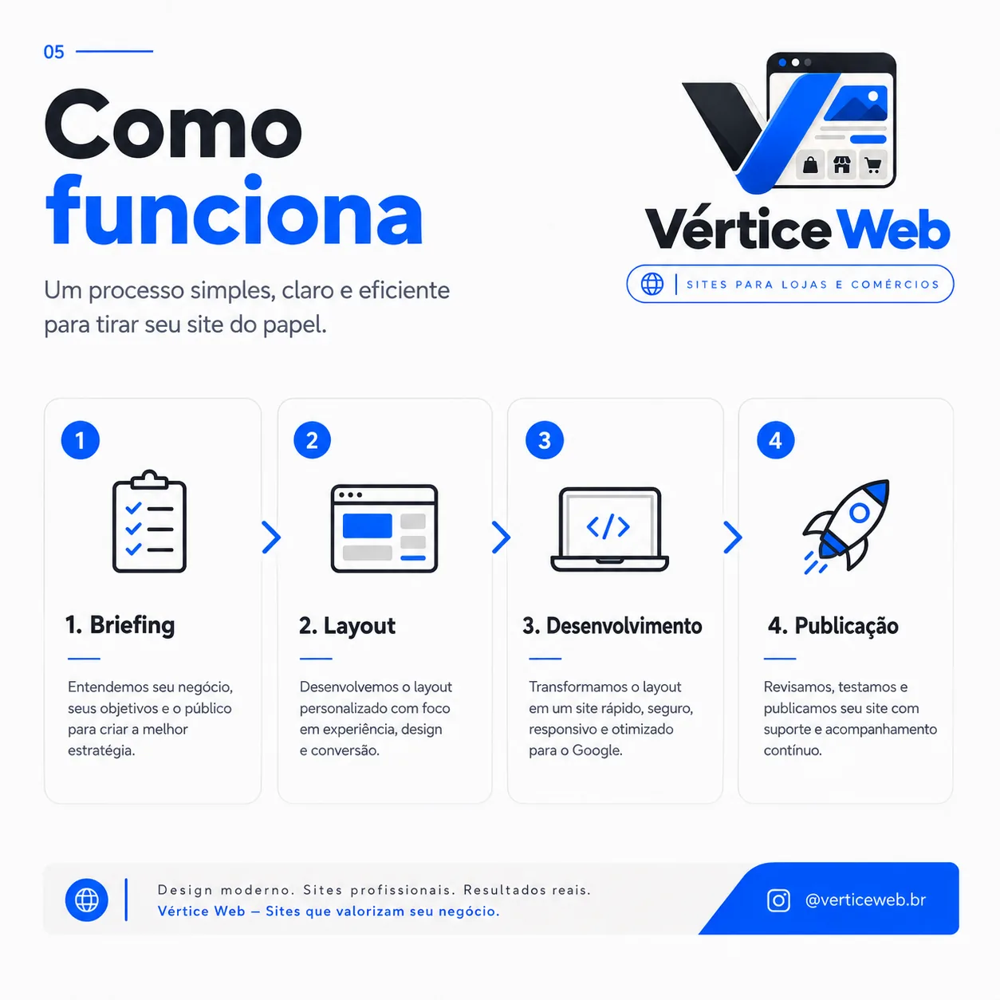
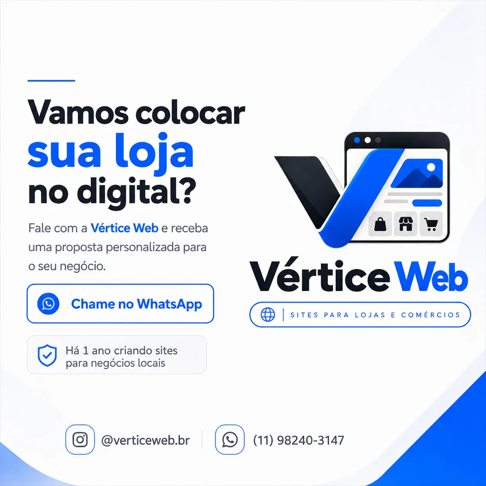

01
Site institucional
Uma presença digital completa para apresentar sua marca, serviços, diferenciais e gerar contatos.
- Design exclusivo
- SEO essencial
- WhatsApp integrado
Estratégia, design e desenvolvimento para transformar a presença digital da sua empresa em confiança, clareza e oportunidade comercial.
Landing Page3 meses de hospedagem gratuita Oferta de lançamento ↘O cliente decide em segundos se confia em uma marca. Nosso trabalho é fazer esses segundos jogarem a favor do seu negócio.
Conheça as soluções ↘Projetos sob medida, construídos para funcionar perfeitamente no celular, tablet e desktop.
Uma presença digital completa para apresentar sua marca, serviços, diferenciais e gerar contatos.
Mostre seus produtos com organização, busca, categorias e uma experiência que facilita a compra.
Página focada em uma única oferta, campanha ou produto, com narrativa e CTA pensados para conversão.
Seu site continua vivo depois do lançamento, com melhorias, ajustes e acompanhamento.
Escolha o seu tipo de negócio. O protótipo muda na hora para mostrar como estratégia, texto e visual podem trabalhar juntos.
Destaque visual para os produtos, benefícios claros e CTA direto para transformar interesse em contato.
Uma vitrine limpa, rápida e feita para transformar curiosidade em conversa.
Um endereço próprio organiza sua marca, sua oferta e seus contatos em um lugar que você controla.
CTAs claros e páginas objetivas ajudam o visitante a entender o próximo passo sem ficar procurando informação.
Design consistente, domínio profissional e experiência rápida fazem sua empresa parecer mais preparada.
Ao contratar a Landing Page, os 3 primeiros meses de hospedagem são gratuitos.
Aproveitar benefício ↗Quatro projetos, quatro direções visuais e nenhuma aparência de template reciclado. Cada conceito foi construído para demonstrar como estratégia, identidade e experiência mudam de acordo com o negócio.
Uma hamburgueria com identidade própria precisava transformar cardápio, desejo e pedido em uma experiência curta e marcante. Criamos uma linguagem dark de fogo, tipografia pesada e um builder interativo de combo.
Dar personalidade ao cardápio sem cair no visual vermelho/amarelo de fast-food.
Direção dark + laranja, produtos em destaque, filtros e “Monte seu pedido”.
Uma vitrine demonstrativa preparada para levar o visitante do desejo ao contato.
Navegação pensada para combinar mobilidade, informação urbana e uma experiência mais segura.
Uma experiência de navegação criada para ir além da rota mais curta. O projeto organiza contexto urbano, leitura de trajeto e decisões de navegação em uma interface pensada para uso real.
Transformar informações complexas de rota em uma experiência simples de consultar.
Interface mobile-first, leitura visual do trajeto e navegação centrada no contexto.
Um produto digital com identidade própria, foco em mobilidade e experiência de uso.
Uma marca de moda que precisava parecer coleção, não catálogo genérico. O projeto mistura editorial, e-commerce, filtros de produto, lookbook e guia de tamanho.
Dar valor às peças sem excesso de elementos.
Composição editorial, drop, filtros e lookbook.
Uma vitrine minimalista com personalidade de marca.
Um pet shop com comunicação mais humana e leve. A experiência muda conforme o tipo de pet e organiza serviços, planos recorrentes, equipe e agendamento.
Ser divertido sem parecer infantil demais.
Formas orgânicas, seletor de pet e planos visuais.
Uma marca simpática com informações fáceis de localizar.
direções próprias apresentadas para mostrar amplitude visual e técnica.
responsivos e pensados para experiências reais em diferentes segmentos.
Escolha o objetivo mais importante agora. A Vértice traduz isso em uma estrutura enxuta, clara e pronta para transformar visita em contato.
Ideal para anúncios, campanhas e serviços em que você quer reduzir distrações e levar o visitante direto para o WhatsApp.
responsivo em qualquer tela
de atuação da marca
do briefing ao lançamento
seu site trabalhando por você
Você acompanha cada fase. Nós cuidamos da complexidade.
Entendemos seu negócio, público, objetivos e referências. A estratégia nasce antes do layout.
Construímos a interface com hierarquia, ritmo, responsividade e foco em percepção de valor.
Transformamos o layout em uma experiência rápida, interativa, otimizada e pronta para produção.
Revisamos, testamos, publicamos e continuamos por perto para evoluir o projeto.
O mesmo sistema visual do site aplicado ao conteúdo social.






Unimos estética, clareza e experiência para seu negócio parecer tão profissional online quanto ele é no mundo real.
Nada de aparência genérica ou template reciclado.
Experiência pensada para onde seu cliente realmente está.
Conteúdo e CTAs organizados para transformar visitas em contatos.
As dúvidas que mais travam quem está pensando em profissionalizar a presença digital.
Instagram é ótimo para descoberta e relacionamento. O site entra como base profissional: organiza sua oferta, centraliza informações e dá ao cliente um caminho claro até o contato.
Não. A estrutura e a direção de conteúdo fazem parte do processo. Organizamos as informações para que a página seja clara e comercial.
Sim. A experiência é pensada de forma responsiva desde o início, com prioridade para navegação, leitura e contato em telas menores.
O benefício vale para a contratação de Landing Page. Os primeiros 3 meses de hospedagem ficam por conta da Vértice Web; as condições para continuar depois desse período são apresentadas na proposta antes do fechamento.
O tamanho da empresa não precisa limitar a percepção da marca. Um site enxuto e bem construído já pode profissionalizar o primeiro contato e servir como base para anúncios, Instagram e WhatsApp.
O básico já é suficiente: o que sua empresa faz, o que quer destacar e como prefere receber contatos. Se textos e organização ainda não estiverem prontos, a Vértice ajuda a transformar essas informações em uma estrutura clara.
Sim. O projeto passa por apresentação e revisão dentro do escopo combinado antes da publicação. A ideia é você saber exatamente o que está sendo entregue antes do lançamento.
Vamos transformar a primeira impressão da sua empresa em uma experiência que transmite valor antes mesmo de você responder no WhatsApp.